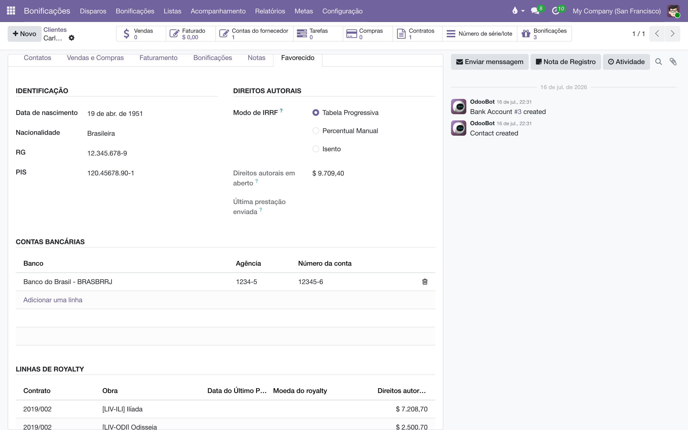
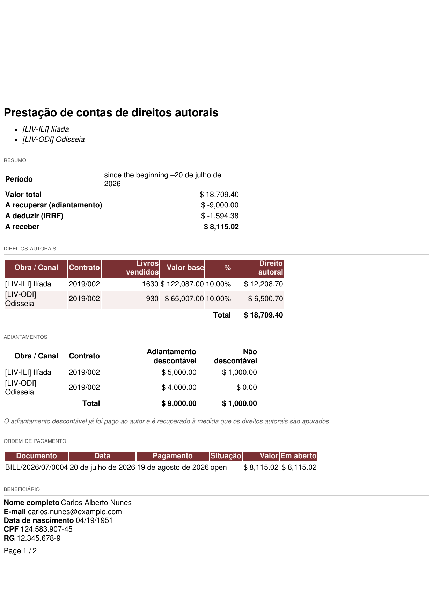

Prestação de contas
Emita o extrato de direitos autorais de cada autor — obra por obra, com adiantamentos, IRRF e o líquido a receber — em PDF, para imprimir ou enviar por e-mail direto do sistema.
Visão geral
Este módulo é a face do sistema voltada ao autor. Ele acrescenta:
- O menu — os contatos que são favorecidos de pelo menos uma linha de royalty. Um contato entra (e sai) da lista sozinho, conforme os contratos o citam.
- A aba Favorecido no cadastro do contato, reunindo os dados pessoais e bancários usados no extrato, as linhas de royalty de todos os contratos e o saldo em aberto.
- A Prestação de contas em si: um relatório em PDF que consolida, por autor, os royalties do período em todos os seus contratos e obras, com um assistente para imprimir ou enviar por e-mail.
Os números vêm do Cálculo de royalties e casam com as faturas do Pagamento de royalties: o total do extrato é, por construção, o mesmo saldo em aberto que a fatura do autor paga. Com o módulo de IRRF sobre direitos instalado, a dedução de IRRF do extrato segue a tabela progressiva (ou o modo do favorecido).
Configuração
O módulo não tem parâmetros próprios — mas o extrato só fica completo se o cadastro do favorecido estiver em dia. Desde 14/10/2026 o contato tem duas abas: Favorecido, com os dados da pessoa, e Contratos de direitos autorais, com os contratos, as linhas de royalty e os valores.
- Abra o favorecido em .
- Na aba Favorecido, seção Identificação: para pessoa física, CPF, RG, PIS, Data de nascimento, Local de nascimento e Nacionalidade; para pessoa jurídica, Nome fantasia, CNPJ, Inscrição Municipal e Colaborador (a pessoa na empresa que cuida do contrato); a razão social é o nome do contato e a sede é o endereço. A seção muda sozinha conforme o contato é Pessoa ou Empresa.
- Na seção Dados pessoais (só para o gerente de contratos): Estado civil, Escolaridade e Autodeclaração de raça/cor, nas categorias do IBGE, com a opção "Prefere não declarar". São dados sensíveis pela LGPD: pedidos por programas públicos de fomento e declarados pela própria pessoa, nunca preenchidos por ela.
- Na seção Regional, confira o Idioma e a Moeda do favorecido; ao lado, o Endereço com CEP, que é o que vai no envelope.
- Em Pagamento, cadastre as contas: Banco, Agência, Número, Tipo de conta (corrente ou poupança) e, se houver, a Chave Pix com o seu Tipo (CPF, CNPJ, e-mail, telefone ou aleatória). Marque Pagar por Pix quando for a preferência do favorecido. A chave é conferida ao salvar: CPF com 11 dígitos, CNPJ com 14, e-mail com "@", telefone com DDD.
- Na aba Contratos de direitos autorais, seção Royalties, o campo IRRF (%) segue como antes (ver o manual de IRRF).
- Para o envio por e-mail, confira que o contato tem e-mail cadastrado.
A aba Contratos de direitos autorais mostra, somente para consulta: as Linhas de royalty do favorecido em todos os contratos (com a Data do Último Pagamento e o saldo de cada uma), os Direitos autorais em aberto somados e a Última prestação enviada.

Emitir a prestação de contas
- Abra o autor (ou selecione vários na lista de ) e, no menu Ação, escolha Prestação de contas.
- No assistente, confira os Favorecidos e escolha a Data final do período — entram no extrato apenas os royalties apurados até essa data. O início do período é automático: a data do último pagamento de cada autor (ou "desde o início", se nunca houve pagamento).
- Clique em Imprimir para gerar o PDF na hora — um extrato por autor selecionado —, ou…
- …clique em Enviar por e-mail: cada autor recebe uma mensagem em português com o período, o valor líquido e o PDF anexado.
Ao enviar, o sistema ainda:
- registra a mensagem (com o anexo) no histórico do próprio autor;
- anota em cada contrato envolvido: "Prestação de contas (período) enviada para autor.";
- grava a Última prestação enviada do autor com a data final do período.
O envio exige e-mail cadastrado: se algum dos selecionados não tiver, o assistente para com a mensagem "Defina primeiro um endereço de e-mail para: …" e nada é enviado até você completar o cadastro.
O envelope com janela
A prestação de contas vai pelo correio num envelope ofício de 115 × 230 mm com janela, com a folha A4 dobrada em três. O endereço do favorecido é impresso num bloco posicionado para cair na janela, e os dados do favorecido e do pagamento vêm logo abaixo, no alto da primeira página — é o que o departamento confere antes de fechar o envelope.
- O módulo já vem com as medidas do envelope da casa (janela a 15 mm do pé, 42 mm de altura, 38 mm da esquerda): na folha, o endereço fica entre 57 e 85 mm do alto, a partir de 40 mm da esquerda, a faixa que a janela mostra em qualquer posição do maço dentro do envelope. Para outro envelope, meça a distância do alto e da esquerda da folha até a janela, e o tamanho dela, com a folha dobrada em três e o painel de cima virado para a janela.
- Em , bloco Envelope, digite as quatro medidas da Janela na folha e a Altura do timbre — a margem onde o cabeçalho da empresa é desenhado; o bloco de endereço só pode começar abaixo dela.
- Abra um favorecido e, em Imprimir, escolha Prova de envelope: sai uma folha com o quadro tracejado da janela, o endereço dentro e as duas linhas de dobra. Dobre, ponha no envelope e ajuste os milímetros até o endereço aparecer inteiro.
A prestação de contas usa um formato de papel próprio, cuja margem superior é a altura do timbre. Se a janela ficar coberta pelo timbre, a impressão para com uma mensagem dizendo para reduzir a altura; a janela também precisa caber no painel de cima da dobra (99 mm).
Idioma e moeda do favorecido
Desde 14/10/2026 cada prestação de contas sai na língua do favorecido: o Idioma do contato decide. Um autor brasileiro lê "Prestação de contas de direitos autorais"; uma editora estrangeira que recebe o mesmo documento lê "Royalty statement", com rótulos, datas e período em inglês. Quem imprime não precisa trocar de idioma; o documento se vira sozinho, inclusive no envio por e-mail.
A Moeda do favorecido, na aba Favorecido, faz o mesmo com os valores: quando é diferente da moeda da empresa e há taxa de câmbio cadastrada (), todos os valores do extrato são convertidos pela taxa vigente na data final do período, e uma linha ao pé diz a taxa usada. Sem taxa cadastrada, o extrato fica na moeda da empresa e avisa — nunca converte um por um em silêncio.
Os royalties continuam calculados na moeda da empresa; a conversão é só de apresentação, para o favorecido saber quanto receberá na moeda dele. O IRRF segue o modo do favorecido (ver o manual de IRRF): uma editora estrangeira normalmente é "Isento".
O que o PDF traz
O documento sai com o cabeçalho e as cores da sua empresa (a paleta das tabelas é derivada da cor principal definida em ) e as datas por extenso em português. As seções:
| Seção | Conteúdo |
|---|---|
| Resumo | Período, Valor total (o que as obras renderam), A recuperar (adiantamento) — mostrado só quando há adiantamento sendo recuperado —, A deduzir (IRRF) e A receber (o líquido). |
| Direitos autorais | Uma linha por obra/canal com saldo em aberto: Obra / Canal, Contrato, Livros vendidos, Valor base, % (ou "variável", quando a faixa mudou dentro do período) e Direito autoral. |
| Faturas em aberto | As faturas de pagamento do autor ainda não pagas, com data, vencimento, valor e situação — o valor delas confere com o total do extrato. |
| Vendas especiais | Detalhe das vendas com desconto qualificado das obras do autor no período: cliente, documento, obra, quantidade, desconto e valor. |
| Adiantamentos | Os adiantamentos por obra, separando Adiantamento descontável e Não descontável — impresso quando existe algum. |
| Dados do autor | Nome completo, CPF, RG, PIS, data de nascimento, nacionalidade, endereço, e-mail e os dados bancários (banco, agência, conta corrente). |

Vendas especiais
Feiras, saldões e vendas diretas costumam sair com desconto grande — e o contrato do autor muitas vezes é por preço de capa. Sem tratamento, o autor receberia royalty sobre um preço que a editora não praticou. A venda especial resolve isso: ela é sempre calculada sobre o valor líquido faturado, o que realmente entrou, independentemente do modo da linha de royalty.
Uma venda conta como especial quando as duas condições valem ao mesmo tempo:
- a fatura veio de uma das Equipes de Vendas Especiais configuradas (por exemplo, a equipe de feiras e eventos); e
- o desconto da linha atinge o Desconto Mínimo Venda Especial (%) — com o mínimo em 0, qualquer desconto qualifica.
- Configure em , seção Vendas Especiais: escolha as equipes e o desconto mínimo.
- Venda normalmente por essas equipes — nenhum passo extra na fatura.
- No contrato, o botão inteligente Vendas Especiais aparece quando houver alguma, abrindo a lista das faturas qualificadas das obras daquele contrato.
- No extrato, a seção Vendas especiais detalha cada uma — cliente, documento, obra, quantidade, desconto e valor — com o total do período. O autor enxerga exatamente por que aquelas vendas renderam sobre o líquido.
Contrato a 10% sobre preço de capa de R$ 60. Numa feira (equipe configurada), o livro sai com 50% de desconto, faturado a R$ 30. Em vez de R$ 6 por exemplar (10% da capa), o autor recebe R$ 3 (10% do líquido) — e o extrato mostra a venda, o desconto e o valor, sem surpresa na prestação de contas.
A regra de cálculo vive no Cálculo de royalties; esta página descreve como ela aparece para o autor. Em contratos que já apuram sobre o valor líquido, a venda especial não muda o valor — só ganha o detalhamento próprio no extrato.
Regras que garantem os números
- O total do extrato é o saldo em aberto. O extrato soma o que foi apurado desde o último pagamento de cada linha até a data final — exatamente o que a fatura em aberto do autor paga. Extrato, saldo e fatura são o mesmo número.
- O adiantamento reduz, mas nunca negativa. Quando o adiantamento ainda supera o que as obras renderam, o extrato mostra o rendimento e a recuperação limitada a ele: o valor a receber fica em zero, nunca negativo — o restante segue para os períodos seguintes.
- Adiantamento não é descontado duas vezes. O que um pagamento anterior já quitou (adiantamento incluído) não volta a ser abatido no extrato seguinte.
- Períodos fechados ficam fora. Royalties já quitados pela data de corte não reaparecem; o extrato seguinte começa de onde o anterior parou.
- IRRF coerente com o pagamento. Com o módulo de IRRF, extrato e fatura calculam a retenção com a mesma tabela e o mesmo modo do favorecido; sem ele, vale o percentual fixo do campo IRRF (%).
Perguntas frequentes
O extrato veio "Nenhum direito autoral em aberto". O autor não tem saldo no período: ou as vendas ainda não foram apuradas (rode Preencher Linhas de Royalties no contrato), ou tudo já foi pago, ou o adiantamento ainda cobre o que as obras renderam.
Por que "A receber" é menor que "Valor total"? Pelas duas deduções que o próprio extrato mostra: a recuperação do adiantamento e o IRRF. O documento existe justamente para o autor ver essa conta.
Posso reemitir um extrato já enviado? Pode — imprimir não altera nada, e enviar de novo apenas gera outra mensagem e atualiza a Última prestação enviada. Os valores só mudam se a apuração ou os pagamentos mudarem.
Consigo emitir para vários autores de uma vez? Sim: selecione-os na lista de Favorecidos e use a mesma ação — Imprimir gera um PDF com um extrato por autor; Enviar por e-mail manda a cada um somente o seu.
O período impresso começa "desde o início". É o esperado para quem nunca recebeu: sem data de último pagamento, o extrato cobre tudo desde a primeira venda apurada.
- Cálculo de royalties — de onde vêm os números do extrato.
- Pagamento de royalties — a fatura que o extrato acompanha.
- IRRF sobre direitos — a dedução de imposto mostrada no resumo.
- Contratos de direitos autorais — o módulo base da suíte.